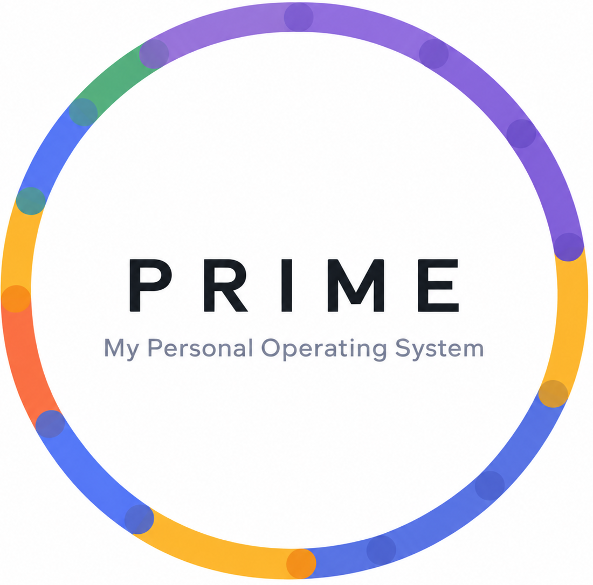

Fires with everything off
App closed, phone locked, aeroplane mode, no signal. Alarms are scheduled by Android itself, on the device. There is no server involved and nothing to be offline from.

PRIME DownloadBuilt for founders · Android
I run a company. My days are calls, meetings, and the deep work that actually moves the business forward — and the hard part was never the work itself. It was knowing, at any given minute, which of them I should be in. So I built the tool I needed. PRIME answers what should I be doing now and what must I not forget — and stays out of the way the rest of the time.
Founders do not fail on their calendar. They fail in the gaps — the ten minutes between things, the block that quietly ran forty minutes long, the thing they promised on a call and never wrote down. PRIME is built for those gaps.
What it does
NOW, NEXT, IMPORTANT, TODAY. It fits on one screen because everything else was moved somewhere it belongs.
Your whole day as a timeline. Blocks are recurrence rules, not one-off appointments — set a morning once and it is there every morning.
All-day or timed, with priority. Today's surface on Home, ordered by how close they are to biting you.
Sticky notes you can pin to your phone's home screen as a widget, so the thing you must not forget is not behind an app icon.
Focus, meditation, breathing and workout timers. Progress. Settings. The things you want occasionally, kept out of the way of the things you want constantly.


The part that has to work
App closed, phone locked, aeroplane mode, no signal. Alarms are scheduled by Android itself, on the device. There is no server involved and nothing to be offline from.
The schedule is re-armed on boot, on app update, and on any change to the clock or timezone — rebuilt from wall-clock time, so 07:00 stays 07:00 after a flight instead of firing an hour out.
What you are in, how long is left, a progress bar that fills, what is next, and today's tasks as rows you can tick off — without unlocking or opening anything.
Deep work does not sound like lunch. Eleven built-in tones, or pick any alarm sound or song already on your phone.
Privacy
Your schedule, alarms, tasks and notes are stored on your phone and nowhere else. Nothing is uploaded. There is no sign-up, no email required, no analytics, and no way for me to see your day — the app does not have the code to send it anywhere.
Uninstalling takes your data with it. That is the trade, stated plainly: no cloud backup, and nothing to leak.
Download
Older 32-bit phone? Download the 32-bit build
Your browser may warn you — it does that for every file that is not from the Play Store.
Android will ask permission to install from your browser or file manager. This is the normal sideloading prompt.
Pick a starting schedule, then allow notifications and battery exemption so alarms can actually fire. Two minutes.
PRIME is not on the Play Store. It is distributed directly, free, with no ads, no tracking and no in-app purchases.
I tried the calendars, the task managers and the productivity systems. Every one of them wanted me to maintain it — and a tool you have to maintain is just one more thing on the list. Running a company does not leave room for that.
So PRIME does the opposite. You set your day once. After that it tells you what you should be in, rings when it changes, and asks nothing of you in between.
It is free. I built it for my own day, and a tool like this is only worth anything if it is the one you actually keep open. If it earns a place in yours, that is the whole point.